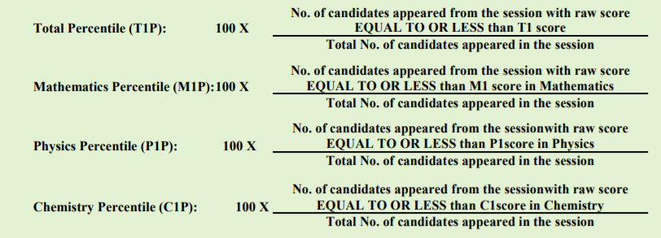

JEE Main 2020: Joint Entrance Exam (JEE) is a national level undergraduate entrance examination which acts as a gateway for admissions into various B.E/B.Tech programs in India. Previously, the JEE Main exam was conducted by CBSE but from this year the JEE Main exam is conducted by NTA that is National Testing Agency. NTA has planned to conduct JEE Main exam twice a year that is the first attempt in the month of January and the second attempt in the month of April.
Fill JEE Main Application Form 2020 Here Released on 3rd Septemeber 2019.
JEE Main 2020
The overview of JEE Main April 2020 is tabulated below
| Description | Details |
| Examination Name | Joint Entrance Examination Main |
| Conducting Body | National Testing Agency (NTA) |
| Category | Undergraduate Examination |
| Level of Exam | National Level |
| Number of Sessions | Twice in a year – January and April |
| Mode of Examination | Paper-I – will be held completely held in Computer-based Mode Paper-II – Mathematics and Aptitude test will be computer-based while Drawing test will be pen-and-paper based |
| Application Mode | Online |
| Official Website | nta.ac.in |
JEE Main 2020 Important Dates
| Events | JEE Main January Important Dates |
| JEE Main 2020 Application Form | 3rd September 2019 |
| Last date to submit JEE Main application form | 30th September 2019 by 11.50 PM |
| Release of online mock test | 8th September 2019 (tentative) |
| Last date to pay fees & uploading documents | 1st October 2019 by 11.50 pm (tentative) |
| JEE Main Application form correction date | 8th to 14th October 2019 (tentative) |
| Exam Dates | 22nd August 2019 |
| Exam Centre Announcement | 19th October 2019 (tentative) |
| JEE Main Admit Card 2020 | 6th December 2019 |
| Commencement of JEE Main Exam 2020 | 6th to 11th January 2020 |
| JEE Main Provisional Answer Key | 15th January 2020 (tentative) |
| JEE Main Final Answer Key | 23rd January 2020 (tentative) |
| JEE Main Result 2020 | 31st January 2020 |
JEE Main Important Date for April Session
| Events | JEE Main Important Dates |
| JEE Main Application Form | 7th February 2020 |
| Last date to submit JEE Main application form | 7th March 2020 |
| JEE Main Application Form Correction | 11th to 15th March 2020 (Tentative) |
| JEE Main Admit Card availability | 16th March 2020 |
| JEE Main Exam Dates | 3rd to 9th April 2020 |
| JEE Main Answer Key | 14th April 2020 (Tentative) |
| Challenging of Answer Key | 14th to 16th April 2020 (Tentative) |
| JEE Main Result Paper 1 | 30th April 2020 |
| AIR declaration | 30th April 2020 |
JEE Main Important Dates 2020 – JEE Main Exam Schedule
The exam schedule for both the papers is tabulated below
| Events | First Shift | Second Shift |
| Exam Timings | 9:30 AM to 12:30 PM | 2:30 PM to 5:30 PM |
| Exam Duration | 3 Hours | 3 Hours |
| Entry to Exam Centre | 7:30 AM to 9 AM | 12:30 PM to 2 PM |
| Checking of Admit Card by the Invigilator | 9 AM to 9:15 AM | 2 PM to 2:15 PM |
| Seating in Examination Centre | 9:15 AM | 2:15 PM |
| Invigilators Instructions | 9:15 AM to 9:25 AM | 2:15 PM to 2:25 PM |
| Commencement of Examination | 9:30 AM | 2:30 PM |
| Conclusion of Examination | 12:30 PM | 5:30 PM |
JEE Main 2020 Eligibility Criteria
The JEE Main eligibility criteria are as follows
- Candidates must have passed class 12 exam or equivalent.
- Students who are appearing for class 12 exam or equivalent in the academic year of 2019 can also apply.
- It is mandatory for candidates to study the following 5 subjects: -Language, 2-Physics, 3-Mathematics, 4-Any one of (Chemistry, Biology, Biotechnology, Technical Vocational Subject), 5-Any other subjects.
- Candidates can attempt JEE Mains exam for three consecutive years.
JEE Main 2020 Reservation
The reservation percentage of different castes are tabulated below
|
Category |
Reservation (in%) |
| NCL – OBC | 27 |
| Scheduled Castes (SC) | 15 |
| Scheduled Tribes (ST) | 7.5 |
| Persons with Disability (PWD) | 3 Percent horizontal |
JEE Main 2020 Application Form
The candidates must register themselves in order to fill up the application form. The JEE Main 2019 Application process is listed below:
Step – 1: Registration
- Visit the official website of JEE Main.
- Click on the link “New Registration”.
- Enter all the required details in the registration form.
- Click on the Submit Button.
- Now you will receive a system-generated mail/SMS
- Note down this system generated application form safely for further purpose.
Step – 2: Personal and Academic Details
- Now login with the system generated application form.
- Enter all the necessary details and click on Proceed to next
Step – 3: Uploading of Image and Signature
- Upload Scanned Image of student between the size of 10 KB – 200 KB in JPG/JPEG Format.
- Now Upload the candidates signature between 4 KB – 30 KB in JPG/JPEG Format.
Step – 4: Fee Payment
- Now process the fee payment, make of fee payment using SBI – MPOS
- Keep a receipt of payment as proof
Step – 5: Confirmation Page Printout
- Now at least take four print out of Confirmation Page after successful remittance of fee.
JEE Main 2020 Application Fee
|
Gender/Category |
Exam Center in India | Exam Center Outside India | ||
| Either for Paper 1 or Paper 2 | For both Paper 1 and 2 | Either for Paper 1 or Paper 2 |
For both Paper 1 and Paper 2 |
|
| General/OBCs (Boys) | 500 | 1300 | 2500 | 3800 |
| SC/ST/PWD/All Girls | 250 | 650 | 1250 | 1900 |
JEE Main Previous Year Registration Analysis
| Year | Total Applicants |
| JEE Main 2019 April | 9.34 Lakh Candidates |
| JEE Main 2019 January | Paper – 1: 9,29,198 and Paper – 2: 1,80,052 |
| JEE Main 2018 | 11,48,000 |
| JEE Main 2017 | 11,98,989 |
| JEE Main 2016 | 12,07,257 |
| JEE Main 2015 | 13,04,217 |
| JEE Main 2014 | 13,56,000 |
| JEE Main 2013 | 12,82,000 |
| JEE Main 2012 | 12,20,000 |
JEE Main Exam Centre 2020
| State | City | Code |
| Arunachal Pradesh | Itanagar | AL01 |
| Naharalagum | AL02 | |
| Assam | Dibrugarh | AM01 |
| Guwahati | AM02 | |
| Jorhat | AM03 | |
| Silchar | AM04 | |
| Tezpur | AM05 | |
| Andaman & Nicobar | Port Blair | AN01 |
| Andhra Pradesh | Anantapur | AP01 |
| Bapatla | AP02 | |
| Bheemavaram | AP03 | |
| Chirala | AP04 | |
| Chittoor | AP05 | |
| Eluru | AP06 | |
| Guntur | AP07 | |
| Kadapa | AP08 | |
| Kakinada | AP09 | |
| Kurnool | AP10 | |
| Nellore | AP11 | |
| Ongole | AP12 | |
| Rajahmundry | AP13 | |
| Srikakulam | AP14 | |
| Tadepalligudem | AP15 | |
| Tirupati | AP16 | |
| Vijayawada | AP17 | |
| Visakhapatnam | AP18 | |
| Vizianagaram | AP19 | |
| Bihar | Aurangabad | BR01 |
| Bhagalpur | BR02 | |
| Biharsharif | BR03 | |
| Darbhanga | BR04 | |
| Gaya | BR05 | |
| Muzaffarpur | BR06 | |
| Patna | BR07 | |
| Purnea | BR08 |
JEE Main Exam Pattern for April Session (Paper – I)
| Particulars | Details |
| Mode of exam | Computer Based Test |
| Medium of Exam | English, Hindi & Gujarati |
| Type of Questions | objective type or multiple-choice questions (MCQs) |
| Duration | 3 hours |
JEE Main Exam Pattern for Paper – I
| Subjects | No. of questions | Marks |
| Physics | 30 | 120 |
| Chemistry | 30 | 120 |
| Mathematics | 30 | 120 |
| Total | 90 | 360 |
JEE Main Exam Pattern for Paper – II
| Subjects | No. of questions | Marks |
| Mathematics | 30 | 120 |
| Aptitude test | 50 | 200 |
| Drawing | 02 | 70 |
| Total | 82 | 390 |
JEE Main Slot Booking
Students can choose their date & time when they are comfortable to take the JEE Mains exam. Candidates can book their slot when they are filling up the JEE Main application form.
JEE Main Correction
The officials of JEE will also allow candidates to make changes in their JEE Mains application form. Candidates can visit the official website and make necessary changes during JEE mains correction window is open. The students can edit the following details during the correction window is open:
- Name
- Image
- Paper
- Category
- Language
- Aadhar Number
- Date of birth
- Communication Address
- Contact Information
JEE Main Maths Syllabus
JEE Main Maths Syllabus for Paper – I and Paper – II is listed below
JEE Main Maths: Sets, Relations and Functions, Complex Numbers, Quadratic Equations, Matrices and Determinants, Mathematical Induction, Sequences and Series, Permutations and Combinations, Limits, Continuity and Differentiability,, Applications of Binomial Theorem, Integral Calculus, Differential Equation, Vector Algebra, Trigonometry, Co-ordinate Geometry, Three Dimensional Geometry, Probability, Statistics, and Mathematical Reasoning.
JEE Main Maths Previous year Chapter Wise Questions With Solutions
JEE Main Maths Weightage – Topic wise
| Chapter Name | Expected No. of Questions | Marks |
| Coordinate Geometry | 5 | 20 |
| Limits, Continuity, and Differentiability | 3 | 12 |
| Integral Calculus | 3 | 12 |
| Complex numbers and Quadratic Equation | 2 | 8 |
| Matrices and Determinants | 2 | 8 |
| Statistics and Probability | 2 | 8 |
| Three Dimensional Geometry | 2 | 8 |
| Vector Algebra | 2 | 8 |
| Sets, Relation, and Function | 1 | 4 |
| Permutations and Combinations | 1 | 4 |
| Binomial Theorem and Its Application | 1 | 4 |
| Sequences and Series | 1 | 4 |
| Trigonometry | 1 | 4 |
| Mathematical Reasoning | 1 | 4 |
| Differential Equation | 1 | 4 |
| Statics and Dynamics | 1 | 4 |
| Differential Calculus | 1 | 4 |
JEE Main Chemistry Syllabus
JEE Main Chemistry Syllabus for Paper – I and Paper – II is listed below
JEE Main Chemistry: Some Basic Concepts in Chemistry, States of Matter, Solid State, Liquid State: Properties of liquids, Gaseous State, Atomic Structure, Chemical Bonding and Molecular Structure, Covalent Bonding, Molecular Orbital, Chemical Thermodynamics, First law of thermodynamics, Solutions, Equilibrium, Equilibrium involving chemical processes, Redox Reactions and Electrochemistry.
JEE Main Chemistry Previous Year Chapter Wise Questions With Solutions
JEE Main Chemistry Weightage – Topic wise
| Chapter Name | Expected No. of Questions | Marks |
| Transition Elements and Coordination Chemistry | 3 | 12 |
| Periodic table and Representative Elements | 3 | 12 |
| Thermodynamics And Gaseous State | 2 | 8 |
| Atomic Structure | 2 | 8 |
| Chemical Bonding | 2 | 8 |
| Chemical And Ionic Equilibrium | 2 | 8 |
| Solid-State And Surface Chemistry | 2 | 8 |
| Nuclear Chemistry And Environment | 2 | 8 |
| Mole Concept | 1 | 4 |
| Redox Reaction | 1 | 4 |
| Electrochemistry | 1 | 4 |
| Chemical Kinetics | 1 | 4 |
| Solution and Colligative Properties | 1 | 4 |
| General Organic Chemistry | 1 | 4 |
| Stereochemistry | 1 | 4 |
| Hydrocarbon | 1 | 4 |
| Alkyl Halides | 1 | 4 |
| Carboxylic Acid and their Derivatives | 1 | 4 |
| Carbohydrates, amino acid, and Polymers | 1 | 4 |
| Aromatic Compounds | 1 | 4 |
JEE Main Physics Syllabus
JEE Main Physics Syllabus for Paper – I and Paper – II is listed below
JEE Main Physics: Units and Measurement, Kinematics, Laws of Motion, Work, Energy and Power, Rotational Motion, Gravitation, Properties of Solids and Liquids, Thermodynamics, Kinetic Theory of Gases.
JEE Main Physics Previous Year Chapter Wise Questions With Solutions
JEE Main Physics Weightage – Topic wise
| Chapter Name | Expected No. of Questions | Marks |
| Modern Physics | 5 | 20 |
| Heat and Thermodynamics | 3 | 12 |
| Optics | 3 | 12 |
| Current Electricity | 3 | 12 |
| Electrostatics | 3 | 12 |
| Magnetics | 2 | 8 |
| Unit, Dimension, and Vector | 1 | 4 |
| Kinematics | 1 | 4 |
| Laws of motion | 1 | 4 |
| Work, Power, and Energy | 1 | 4 |
| Centre Of Mass, Impulse, and Momentum | 1 | 4 |
| Rotation | 1 | 4 |
| Gravitation | 1 | 4 |
| Simple Harmonic Motion | 1 | 4 |
| Solids and Fluids | 1 | 4 |
| Waves | 1 | 4 |
| Electromagnetics Induction; AC | 1 | 4 |
Aptitude Test: Awareness of places, persons, buildings and materials, Texture and objects related to Architecture and building environment, Visualising 3D objects from 2D drawings, Visualising different sides of 3D objects, Mental Ability (Visual, Numerical and Verbal), Analytical Reasoning, Three dimensional – perception and appreciation of scale and proportion of objects, colour texture, building forms and elements, contrast and harmony.
Drawing and designing of geometrical or abstract shapes and patterns in pencil, Transformation of forms both 2 D and 3 D union, Elevations and 3 D views of objects Rotation, Development of surfaces and volumes, Generation of Plan, Creating 2D and 3D compositions using given shapes and forms, Sketching of activities from memory of urban scenes (public space, festivals, market, street scenes, recreational spaces monuments, etc.), landscape (gardens, trees, riverfronts, jungles, plants etc.) and rural life.
JEE Main Syllabus 2019 – PDF Download
JEE Main Preparation
JEE Main 2020 exam is considered to be one of the toughest examinations in India. Candidates must have a proper preparation plan in order to crack the examination. Candidates are advised to follow the preparation plan as listed below to ace the JEE Main 2020 Examination:
- The first step towards JEE Main Preparation is to complete the entire Syllabus.
- Schedule Time Table: With the few days left for JEE Main examination, candidates are advised to schedule themselves with a strict time table and follow it regularly.
- Work on easy topics first and later move to difficult topics.
- Work on JEE Main Previous Year Papers: Most of the questions which are asked in JEE Main will be derived from the previous year JEE Main Papers. So candidates are advised to work on previous year JEE Main papers.
- Take Mock Tests: Once you have completed the syllabus, the candidates are advised to take mock tests, taking a mock test helps you analyze your preparation level and further you can work on them.
JEE Main Admit Card
The JEE Main admit card for April session will be released on March 18th, 2020. Students can visit the official website in order to download their JEE Mains Admit Card for the second attempt. Steps to download JEE Mains Admit Card is listed below:
- Step – 1: Visit the official website of JEE Main.
- Step – 2: Login with the help of your credentials.
- Step – 3: Now click on link JEE 2020 Admit Card.
- Step – 4: Your admit card will be displayed on the screen.
- Step – 5: Candidates are advised to check the details mentioned on the JEE Mains Admit card carefully.
- Step – 6: Download your JEE Main Admit and keep it safe for future reference.
JEE Main Mock Test
The officials of NTA has released a mock test for JEE on the official website. Students are advised to take this mock test to get an idea about how the questions will be raised in the JEE Mains examination. The officials have also launched a mobile app for mock tests.
JEE Main Result
The JEE Main Result will be announced once the exams are over. Students can visit the official website in order to download their JEE Mains result from the official website. Along with the JEE Mains result, the officials will also release the merit list and those candidates whose name are mentioned in the merit list will be qualified.
JEE Main Cutoff
After the announcement of JEE Mains results for April Session, the officials will also release the cutoff category wise. The category wise expected cutoff is tabulated below:
| Category | Max Marks | Min Marks |
| Common Rank List | 350 | 74 |
| OBC-NCL | 73 | 45 |
| SC | 73 | 29 |
| ST | 73 | 24 |
| PwD | 73 | -35 |
JEE Main Normalization Procedure
The JEE Main normalization procedure that is the calculation of scores is given below:
Step – 1: Distribution of Examinees in two days and in two shifts per day
Candidates would be distributed into four sessions randomly so that each session has approximately the equal number of candidates. These four sessions would be as follows:
- Session-1: Day-1 Shift-1
- Session-2: Day-1 Shift-2
- Session-3: Day-2 Shift-1 and
- Session-4: Day-2 Shift-2
In the event of more number of days or more number of shifts, the candidates will be divided accordingly.
This will ensure that there is no bias in the distribution of candidates who shall take the examination. Further, with a large population of examinees spread over the entire country the possibility of such bias becomes remote.
Step – 2: Preparation of Results for each Session:
The examination results for each session would be prepared in the form of
- Raw Scores.
- Percentiles Scored separately for each of the three subjects (Mathematics, Physics, Chemistry) and the Total.
The following 4 Percentiles would be calculated for each candidate in the Session:
Let T1, M1, P1, C1 be the raw scores in Total, Mathematics, Physics, Chemistry of a candidate and T1P, M1P, P1P, C1P be the Percentile Scores of Total, Mathematics, Physics, Chemistry of that candidate. And the JEE Main Normalization is done as the following image:

JEE Main Percentile Vs Rank
What is the Percentile Score?
Percentile Score is nothing but the percentage of the total number of students who appeared for the jee exam scored less than or equal to that particular percentile in that examination.
How To Calculate the Percentile Score?
The formula to calculated Percentile score is
Percentile Score of a Candidate = 100 x (Number of candidates who secured a raw score (or actual score) EQUAL TO OR LESS than the candidate) / (Total number of candidates who appeared in that session).
JEE Main Percentile Vs Rank for the January Session is tabulated below
| Percentile Scores (NTA Score) | Ranks |
| 100 | 1 |
| 99 | 8746 |
| 98 | 17,490 |
| 97 | 26,235 |
| 96 | 34,980 |
| 95 | 43,724 |
| 94 | 52,469 |
| 93 | 61,214 |
| 92 | 69,959 |
| 91 | 78,703 |
| 90 | 87,448 |
| 85 | 1,31,171 |
| 80 | 1,74,895 |
| 70 | 2,62,342 |
| 60 | 3,49,789 |
| 50 | 4,37,236 |
| 40 | 5,24,682 |
| 30 | 6,12,129 |
| 20 | 6,99,576 |
| 10 | 7,87,023 |
| 5 | 8,30,747 |
| 0 | 8,74,469 |
How to Choose JEE Main Exam Centers For April 2020?
Follow the steps as below to choose your JEE Main Exam Centers:
Step 1: Visit the official website of JEE Main and fill up the application form for JEE Main examination.
Step 2: While filling the Application form candidates should also fill their examination centers. Candidates can select up to 5 examination centers here.
Step 3: Now candidates are requested to review their examination center and submit the application form.
List of State-Wise JEE Main Exam Centers 2020
JEE Main State-wise Examination Centers for April 2020 are tabulated below:
| State Name | City Name | Codes |
| Arunachal Pradesh | Itanagar | AL01 |
| Naharalagum | AL02 | |
| Assam | Dibrugarh | AM01 |
| Guwahathi | AM02 | |
| Jorhat | AM03 | |
| Silchar | AM04 | |
| Tezpur | AM05 | |
| Andaman & Nicobar | Port Blair | AN01 |
| Andhra Pradesh | Anantapur | AP01 |
| Bapatla | AP02 | |
| Bheemavaram | AP03 | |
| Chirala | AP04 | |
| Chittoor | AP05 | |
| Eluru | AP06 | |
| Guntur | AP07 | |
| Kadapa | AP08 | |
| Kakinada | AP09 | |
| Kurnool | AP10 | |
| Nellore | AP11 | |
| Ongole | AP12 | |
| Rajahmundry | AP13 | |
| Srikakulam | AP14 | |
| Tadepalligudem | AP15 | |
| Tirupati | AP16 | |
| Vijayawada | AP17 | |
| Visakhapatnam | AP18 | |
| Vizinagaram | AP19 | |
| Bihar | Aurangabad | BR01 |
| Bhagalpur | BR02 | |
| Biharsharif | BR03 | |
| Darbhanga | BR04 | |
| Gaya | BR05 | |
| Muzaffarpur | BR06 | |
| Patna | BR07 | |
| Purnea | BR08 | |
| Chattisgarh | Bhilai | CG01 |
| Bilaspur | CG02 | |
| Raipur | CG03 | |
| Chandigarh | Chandigarh | CH01 |
| Daman & Diu | Daman & Diu | DD01 |
| New Delhi/ Delhi | Delhi | DL01 |
| Dadra & Nagar Haveli | Dadra & Nagar Haveli | DN01 |
| Gujarat | Ahmedabad | GJ01 |
| Anand | GJ02 | |
| Bhavanagar | GJ03 | |
| Gandhinagar | GJ04 | |
| Godhra | GJ05 | |
| Jamnagar | GJ06 | |
| Junagarh | GJ07 | |
| Mehsana | GJ08 | |
| Patan | GJ09 | |
| Rajkot | GJ10 | |
| Surat | GJ11 | |
| Vadodara | GJ12 | |
| Valsad | GJ13 | |
| Goa | Panaji/Madgaon | GO01 |
| Himachal Pradesh | Bilaspur (hp) | HP01 |
| Dharamshala | HP02 | |
| Hamirpur | HP03 | |
| Kangra | HP04 | |
| Palampur | HP05 | |
| Shimla | HP06 | |
| Solan | HP07 | |
| Haryana | Ambala | HR01 |
| Bahadurgarh | HR02 | |
| Faridabad | HR03 | |
| Gurugram | HR04 | |
| Hisar | HR05 | |
| Karnal | HR06 | |
| Kurukshetra | HR07 | |
| Panipat | HR08 | |
| Sonepat/Murthal | HR09 | |
| Jharkhand | Bokaro | JH01 |
| Dhanbad | JH02 | |
| Jamshedpur | JH03 | |
| Ranchi | JH04 | |
| Jammu & Kashmir | Baramulla | JK01 |
| Jammu | JK02 | |
| Samba | JK03 | |
| Srinagar | JK04 | |
| Karnataka | Bagalkot | KK01 |
| Belgaum | KK02 | |
| Bellary | KK03 | |
| Bengaluru | KK04 | |
| Bidar | KK05 | |
| Devanagere | KK06 | |
| Dharwad | KK07 | |
| Gulbarga | KK08 | |
| Hassan | KK09 | |
| Hubli | KK10 | |
| Kolar | KK11 | |
| Mangaluru | KK12 | |
| Manipal | KK13 | |
| Mysore | KK14 | |
| Shivamogga | KK15 | |
| Tumkur | KK16 | |
| Udupi | KK17 | |
| Kerala | Alappuzha | KL01 |
| Angamaly | KL02 | |
| Chenganur | KL03 | |
| Ernakulam | KL04 | |
| Idukki | KL05 | |
| Kanjirappally | KL06 | |
| Kannur | KL07 | |
| Kasaragod | KL08 | |
| Kollam | KL09 | |
| Kothamanglam | KL10 | |
| Kottayam | KL11 | |
| Kozhikode | KL12 | |
| Malapuram | KL13 | |
| Moovattupuzha | KL14 | |
| Palakkad | KL15 | |
| Pathanamathitha | KL16 | |
| Thiruvananthapuram | KL17 | |
| Thirssur | KL18 | |
| Lakshadweep | Kavarrati | LD01 |
| Meghalaya | Shillong | MG01 |
| Manipur | Imphal | MN01 |
| Madhya Pradesh | Balaghat | MP01 |
| Betul | MP02 | |
| Bhopal | MP03 | |
| Chhatarpur | MP04 | |
| Chhindwara | MP05 | |
| Gwalior | MP06 | |
| Indore | MP07 | |
| Jabalpur | MP08 | |
| Khargaon | MP09 | |
| Mandsur | MP10 | |
| Rewa | MP11 | |
| Sagar | MP12 | |
| Satna | MP13 | |
| Shahdol | MP14 | |
| Ujjain | MP15 | |
| Vidisha | MP16 | |
| Maharastra | Ahmednagar | MR01 |
| Akola | MR02 | |
| Amravati | MR03 | |
| Aurangabad | MR04 | |
| Beed | MR05 | |
| Bhandara | MR06 | |
| Bhusawal | MR07 | |
| Buldana | MR08 | |
| Chandrapur | MR09 | |
| Dhule | MR10 | |
| Gadchiroli | MR11 | |
| Gondia | MR12 | |
| Jalgaon | MR13 | |
| Kolhapur | MR14 | |
| Latur | MR15 | |
| Mumbai | MR16 | |
| Ngapur | MR17 | |
| Nanded | MR18 | |
| Nasik | MR19 | |
| Navi Mumbai | MR20 | |
| Parbhani | MR21 | |
| Pune | MR22 | |
| Raigad | MR23 | |
| Ratnagiri | MR24 | |
| Sangali | MR25 | |
| Satara | MR26 | |
| Solapur | MR27 | |
| Thane | MR28 | |
| Wardha | MR29 | |
| Washim | MR30 | |
| Yavatmal | MR31 | |
| Mizoram | Aizwal | MZ01 |
| Nagaland | Dimapur | NL01 |
| Kohima | NL01 | |
| Odisha | Angul | OR01 |
| Balasore | OR02 | |
| Berhampur | OR03 | |
| Bhuvaneswar | OR04 | |
| Cuttack | OR05 | |
| Dhenkanal | OR06 | |
| Jeypore | OR07 | |
| Rourkela | OR08 | |
| Sambalpur | OR09 | |
| Punjab | Amritsar | PB01 |
| Bathinda | PB02 | |
| Fathegarh Sahib | PB03 | |
| Jalandhar | PB04 | |
| Ludhiana | PB05 | |
| Mohali | PB06 | |
| Pathankot | PB07 | |
| Patiala | PB08 | |
| Phagwara | PB09 | |
| Ropar | PB10 | |
| Sangrur | PB11 | |
| Puducherry | Puducherry | PO01 |
| Rajasthan | Ajmer | RJ01 |
| Alwar | RJ02 | |
| Bharatpur | RJ03 | |
| Bhilwara | RJ04 | |
| Bikaner | RJ05 | |
| Jaipur | RJ06 | |
| Jodhpur | RJ07 | |
| Kota | RJ08 | |
| Sikar | RJ09 | |
| Sriganganagar | RJ10 | |
| Udaipur | RJ11 | |
| Sikkim | Gangtok | SM01 |
| Tripura | Agartala | TA01 |
| Telangana | Hyderbad | TL01 |
| Karimnagar | TL02 | |
| Khammam | TL03 | |
| Mahabubngar | TL04 | |
| Nalogonda | TL05 | |
| Ranga Reddy | TL06 | |
| Warangal | TL07 | |
| Tamil Nadu | Chennai | TN01 |
| Coimbatore | TN02 | |
| Cuddalore | TN03 | |
| Dindigul | TN04 | |
| Kanchipuram | TN05 | |
| Kanyakumari | TN06 | |
| Karur | TN07 | |
| Madurai | TN08 | |
| Nagarcoli | TN09 | |
| Namakkal | TN10 | |
| Salem | TN11 | |
| Tanjore | TN12 | |
| Thoothkudi | TN13 | |
| Tiruchirapalli | TN14 | |
| Tirunelveli | TN15 | |
| Tiruvallur | TN16 | |
| Tiruvannamalai | TN17 | |
| Vellore | TN18 | |
| Villipuram | TN19 | |
| Virudhunagar | TN20 | |
| Uttarakhand | Dehradun | UK01 |
| Haldwani | UK02 | |
| Haridwar | UK03 | |
| Nainital | UK04 | |
| Pantnagar | UK05 | |
| Roorkee | UK06 | |
| Uttar Pradesh | Agra | UP01 |
| Aligarh | UP02 | |
| Allahabad | UP03 | |
| Bareilly | UP04 | |
| Bulandshar | UP05 | |
| Faizabad | UP06 | |
| Ghaziabad | UP07 | |
| Gorakhpur | UP08 | |
| Noida | UP09 | |
| Jhansi | UP10 | |
| Kanpur | UP11 | |
| Lucknow | UP12 | |
| Mathura | UP13 | |
| Meerut | UP14 | |
| Moradabad | UP15 | |
| Muzaffarnagar | UP16 | |
| Sitapur | UP17 | |
| Varanasi | UP18 | |
| West Bengal | Asansol | WB01 |
| Bardhman | WB02 | |
| Darjeeling | WB03 | |
| Durgapur | WB04 | |
| Haldia | WB05 | |
| Hooghly | WB06 | |
| Howrah | WB07 | |
| Kalyani | WB08 | |
| Kharagpur | WB09 | |
| Kolkata | WB10 | |
| Siliguri | WB11 |
JEE STUDY MATERIALS
JEE study materials are available here for the candidates who are preparing for JEE(Joint Entrance Exam) 2019. Download the materials for Maths, Physics and Chemistry subjects, which are designed by our experienced subject experts. JEE Sample papers and previous years Main and Advanced question papers along with chapter-wise solutions are provided here for free by LearnCBSE. Also, JEE latest syllabus are provided so that candidates can prepare for the exam as per the curriculum. Using these materials candidates can secure a good score in the JEE competitive exam.
LearnCBSE always focuses on providing quality education to all levels of students who are preparing for competitive exams. All these materials are available online for free and categorised into smaller parts to make the candidates understand each and every concept completely. Also, diagrams, tables and number of examples are given to support these materials. The topics covered under JEE have been included here with solved examples and exercises of individual unit, to prepare for the exam. Securing good cut-off percentile in JEE will help students to get admissions in IIT institutes of India to get higher studies in Engineering field. A well-polished engineers are produced by the IIT institutes after they completed their engineering. Students of IITs gets jobs very easily and have higher demands in the market. Therefore, to make all the students eligible for IIT, we are providing here the best study materials.
With the help of these learning materials students can do self-study, at any place with the proper understanding of all concepts. JEE Main and JEE advanced materials will encourage students to gather the knowledge for all the fundamentals at a fast pace. They are easily understandable by all the students without any barrier. All the links related to the subjects are given here for JEE preparations. Click and download them for free and start preparing for the exams.
JEE Main 2019 January Official Question Papers and Answer Key
| S.No | JEE Main 2019 January Session | Sessions | Question Papers | Answer Key |
| 1 | January 8, 2019 (Paper 2) | Forenoon Session | Click here | Click Here |
| Afternoon Session | Click Here | Click Here | ||
| 2 | January 9, 2019 (Paper 1) | Forenoon Session | Click here | Click Here |
| Afternoon Session | Click here | Click Here | ||
| 3 | January 10, 2019 (Paper 1) | Forenoon Session | Click here | Click Here |
| Afternoon Session | Click here | Click Here | ||
| 4 | January 11, 2019 (Paper 1) | Forenoon Session | Click here | Click Here |
| Afternoon Session | Click here | Click Here | ||
| 5 | January 12, 2019 (Paper 1) | Forenoon Session | Click here | Click Here |
| Afternoon Session | Click here | Click Here |
JEE Main Counselling 2020
JoSAA (Joint Seat Allocation Authority is responsible to conduct JEE Main Counselling & Seat Allotment for all the students who are qualified in the JEE Main Examination. Candidates must register themselves to JoSAA through online mode in order to participate in JEE Main Counselling 2020. JEE Main 2020 Counselling is expected to conduct tentatively in the month of June in Online mode. The detailed JEE Main Counselling procedure is listed below:
Step – 1: Online Registration:
In order to participate in JEE Main 2020 Counselling, students must register themselves to JoSAA through online mode with the help of their registration number and security pin.
Step – 2: Online Choice Filling & Locking:
Candidates must lock their choices in which institute they want to presume B.E/B.Tech Programme. Based on the candidates choice filling, the seat allotment will be done.
Step – 3: Seat Allotment
Based on the availability of seat the candidates will be allotted seats.
Step – 4: Fee Payment & Seat Acceptance
Once the seat is allocated candidates must choose any of the following options:
Freeze–If candidates are satisfied with the seat allotment and do not participate in further options.
Float– If candidates need to upgrade their seat allotment.
Slide– If candidates wish to upgrade the course in the same institute.
Withdraw–If candidates have accepted the seat.
Step – 5: Verification Of Documents
Finally, the candidates must verify their documents and the documents to be produced at the time of verification is listed below:
- 3 passport size photographs as uploaded during registration
- Provisional JoSAA seat allotment letter
- Photo identity card
- Proof of seat acceptance fee payment
- JEE Main 2020 Admit Card
- Date of birth proof
- JEE Main 2020 Score Card
- Class XII Mark sheet
- Category certificate (if applicable)
Frequently Asked Questions Regarding JEE Main 2020
Q1. What is JEE Main?
A: JEE Main is a common entrance examination which acts as a gateway to admissions into various B.Tech/B.E programs.
Q2. What is the eligibility criteria for JEE Mains 2020?
A: The eligibility criteria for JEE Mains 2020 is listed below:
- Candidates must have passed class 12 exam or equivalent.
- Students who are appearing for class 12 exam or equivalent in the academic year of 2020 can also apply.
- It is mandatory for candidates to study the following 5 subjects: -Language, 2-Physics, 3-Mathematics, 4-Any one of (Chemistry, Biology, Biotechnology, Technical Vocational Subject), 5-Any other subjects.
- Candidates can attempt JEE Main exam for three consecutive years.
Q3. Which is tougher, the KVPY or the JEE Mains?
A: The JEE Main is considered to be a little bit tougher when it is compared to KVPY.
Q4. How can I apply for JEE Mains?
A: Initially you must visit the official website and register yourself and next follow the steps as under to apply for JEE Mains 2020 for April session:
- Step 1: Login with the help of your credentials which you received while registering.
- Step 2: Click on the Application form for JEE Main April Session.
- Step 3: Now fill all the necessary details in the application form.
- Step 4: Upload the photographs & signature as mentioned in the application form.
- Step 5: Book your slot.
- Step 6: Process the application fee.
- Step 7: Click on submit.
- Step 8: Take the printout of the acknowledgment page.
Q5. What documents are required for JEE Mains?
A: Candidates must carry the following documents to the exam center while appearing for the JEE Mains exam:
- JEE Mains Admit Card.
- Passport Size Photo.
- Authorized Photo IDs.
- PwD certificate.
- Stationery items ALLOWED for JEE Mains Paper-II.
Q6. When can I apply for JEE Main April 2020?
A: The candidates who wish to appear for April attempt can fill the JEE Mains application form which will be released on 8th Feb of 2020.
Q7. Is caste certificate required for JEE Mains?
A: Yes, the candidates must produce the caste certificate while appearing for JEE Mains counseling.
Q8. Can we get NIT through JEE mains?
A: Candidates can secure admission in NIT based on their JEE Main ranks.
Q9.What are the minimum marks to qualify in JEE Mains?
A: The minimum qualifying marks for general candidates is 75% and the minimum marks to qualify in JEE mains exam for SC/ST/PwD is 65%.
Q10. Will JEE Mains 2020 be online?
A: Previously, the JEE Mains exam was conducted in both online and offline mode. But from the year of 2020, the JEE mains exam is conducted only in the online mode.
Q11. Is JEE Mains 2020 online or offline?
A: JEE Mains 2020 is conducted only in online mode.
Q12. Will JEE Mains 2020 be conducted twice?
A: Yes the JEE Mains 2020 exam will be conducted twice a year that is the first attempt in the month of January and the second attempt in the month of April.
Q13. How many times we can give JEE mains exam?
A: Candidates can take the JEE main exam for three consecutive years.
Q14. How can I check my JEE Mains exam date?
A: Once exam date link is activated, visit the official website and login with the help of your credentials. Now you will find exam date link, click on that link. Your exam date, the shift will be displayed on the screen.
Q15. How can i edit my JEE Application Form?
A: Candidates can visit the official website and make necessary changes during JEE mains correction window is open. The students can edit the following details during the correction window is open:
- Name
- Image
- Paper
- Category
- Language
- Aadhar Number
- Date of birth
- Communication Address
- Contact Information
Q16. Can we edit JEE Mains form 2020?
A: Yes candidates can make necessary changes in their JEE Mains form 2020.
Q17. When we will get JEE Mains Admit Card?
A: The JEE Mains Admit Card for April session will be released on 18th March 2020 on the official website.
Q18. Is Admit Card and Hall Ticket are same?
A: Yes the admit card and hall ticket is same in JEE Mains.
Q19. How can I download JEE Main Admit Card 2020?
A: Follow the steps below to download the JEE Mains, Admit Card:
- Step 1: Visit the official website of JEE Mains.
- Step 2: Login with the help of your credentials.
- Step 3: Now click on link JEE 2020 Admit Card.
- Step 4: Your admit card will be displayed on the screen.
- Step 5: Candidates are advised to check the details mentioned on the JEE Mains Admit card carefully.
- Step 6: Download your JEE Mains Admit and keep it safe for future reference.
Q 20. What is the date for JEE Mains 2020?
A: The JEE Mains exam date for the April session is conducted from 6th April 2020.
Q21. What is the use of JEE Main exam?
A: The main use of JEE Main is that it acts as a gateway for admission into various B.E/B.Tech courses.
Q22. What is the difference between JEE Main Paper 1 and Paper 2?
A: JEE M.ain Paper 1 is for admissions into B.E or B.Tech courses and the JEE Main Paper 2 is for admission into B.Arch or B.Planning.
Q23. Is AIEEE and JEE Mains Same?
A: Yes AIEEE is same as the JEE. Previously the JEE Main exam is called as All India Engineering Entrance exam.
Q24. What subjects are there in JEE Main Paper 1?
A: The list of subjects for JEE Main Paper 1 is
- Maths
- Chemistry
- Physics
Q25. Is JEE Main Syllabus is same as NCRET?
A: Yes the most of concepts and questions are derived from the NCRET syllabus only.
Q26. How many attempts are there in JEE Mains 2020?
A: Candidate can take JEE Main 2020 exam twice in the academic year of 2020.
Q27. What is the last date of JEE Mains 2020?
A: The last date for JEE Mains 2020 April session is 7th March 2020.
Q28. Is Aadhaar card mandatory for JEE Mains 2020?
A: No Aadhar card is not mandatory for JEE Mains 2020 examination.
Q29. Who will conduct JEE Mains 2020?
A: NTA (National Testing Agency) Conducts JEE Mains 2020 exam.
Q30. Are calculators allowed for JEE Mains?
A: No calculators are allowed for the JEE Main 2020 exam. Students can make use of virtual calculators which is arranged by the officials.
Q31. Is watch allowed for JEE Mains?
A: No candidate is allowed to wear digital watches to the examination hall.
Q32. What is JEE?
A: JEE Is known as Joint Entrance Examination which is a competitive entrance examination for admissions into B.E/B.Tech programs.
Q33. Can I give JEE Mains 3rd time?
A: Yes, the candidate can take jee the main exam three times.
Q 34. What is the JEE Main 2020 Photo Size to be uploaded for registration?
JEE Main 2020 Photo Size, Dimension, Format and Other Details
| JEE Main Application Form Photo | File size | Dimensions | File Format |
|---|---|---|---|
| Photograph (with name and date of taking a photo) | 4 kb to 40 kb | 3.5 cm x 4.5 cm | JPEG/JPG |
| Signature of Candidate | 1 kb to 30 kb | 3.5 cm x 1.5 cm | JPEG/JPG |
| Signature of Father/ Mother/ Guardian | 1 kb to 30 kb | 3.5 cm x 1.5 cm | JPEG/JPG |
Q35. What are the documents required while filling the JEE Main Application Form?
A: The following documents are required while filling the application form:
- Photograph in JPEG format- 10 KB to 100KB (size), 3.5cm x 4.5cm (dimensions)
- Signature in JPEG format- 4 KB to 30KB (size), 3.5cm x 1.5cm (dimensions)
- Aadhar card number
- Proof of Date of Birth
- Class 10 certificate
- Class 12 mark sheet
- Caste Certificate for SC or ST
- Domicile Certificate
- Passport
Q36. What is Normalization in JEE Mains?
A: The process of Normalization is an established practice for comparing candidate scores across multi-session papers and it is similar to those being adopted in other large educational selection tests conducted in India.
Q37. How is Percentile calculated?
A: Percentile Score of a Candidate = 100 x (Number of candidates who secured a raw score (or actual score) EQUAL TO OR LESS than the candidate) / (Total number of candidates who appeared in that session).
Q38. What is the negative mark in JEE Main?
A: The negative marking in JEE Main is as follows: For each incorrect answer, 1 mark will be deducted. For the correct answer, 4 marks are awarded.
Q39. What is CRL rank in JEE Main?
A: The CRL represents the Common Rank List in JEE Main 2020.
Q40. How to check the JEE Main 2020 Exam Center?
A: Candidates can check their JEE Main exam center from their JEE Main Admit Card.
Q41. What is JEE Main Counselling?
A: JoSAA will conduct JEE Main Counselling & Seat Allotment for all the students who are qualified in the JEE Main Examination. Candidates must register themselves to JoSAA through online mode in order to participate in JEE Main Counselling 2020.
Q42. How can I register for JEE Main Counselling?
A: In order to participate in JEE Main 2020 Counselling, students must register themselves to JoSAA through online mode with the help of their registration number and security pin.
Q43. When JEE Main Counselling will start?
A: The JEE Main Counselling 2020 will be tentatively held on June 2020.
Q44. What is the last date to fill the JEE Main Application Form?
A: The last date to fill the JEE Main application form is 7th March 2020 and candidates must fill the application form within 11:30 Pm.
Q45. Are calculators allowed in JEE Main?
A: No, students are not allowed to bring calculators to the JEE Main exam hall. However, candidates can make use of virtual calculators available in the exam hall.
We hope the detailed article on JEE Main 2020 for April is helpful. If you have any doubt regarding this article or JEE Main 2020, drop your comments in the comment section below and we will get back to you as soon as possible.